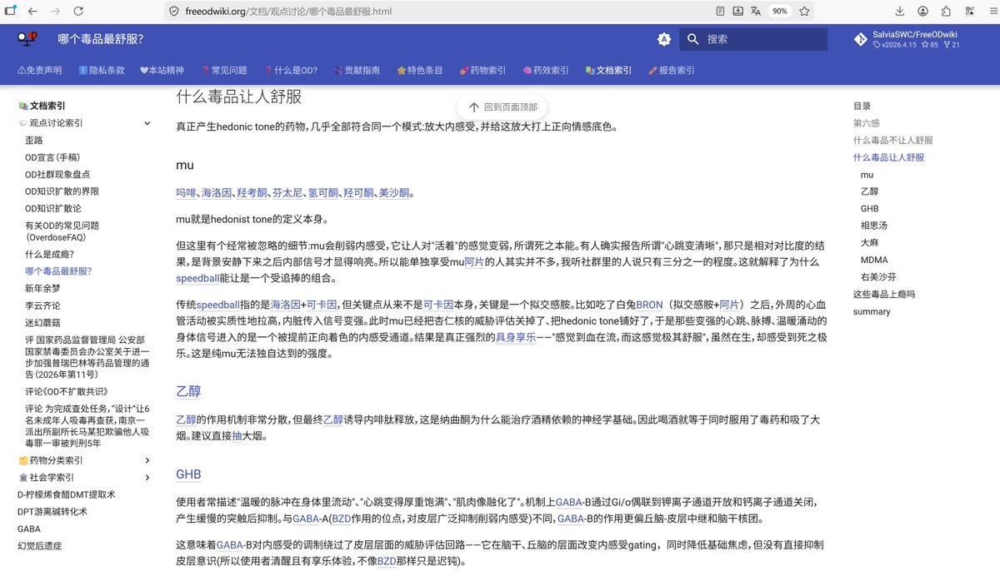

FOW观点讨论栏目——药理篇：
什么毒品让人感到舒服？毒品为什么能让人感到舒服？这种感受和毒瘾有何联系？
本文将运用生命科学的前沿知识，为你回答这些问题。本文开卷有益、老少咸宜，欢迎大家来看看哦🥹
文章链接： https://t.co/lNfFqRrv5K （仅供教育、科普用途）
什么毒品让人感到舒服？毒品为什么能让人感到舒服？这种感受和毒瘾有何联系？
本文将运用生命科学的前沿知识，为你回答这些问题。本文开卷有益、老少咸宜，欢迎大家来看看哦🥹
文章链接： https://t.co/lNfFqRrv5K （仅供教育、科普用途）
